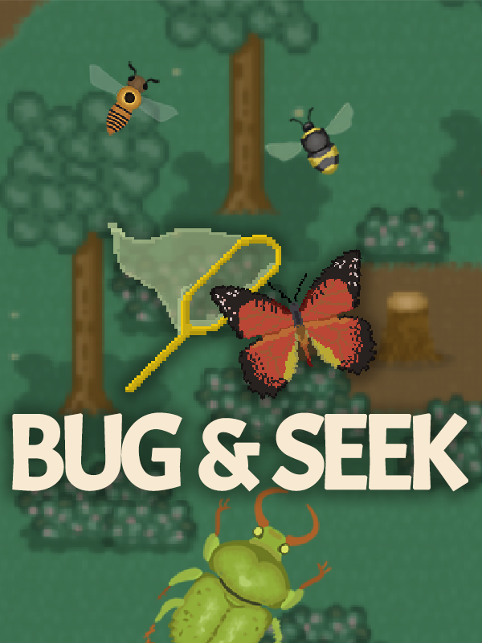

Bug & Seek
Bug & Seek
Details
|  | |
| Playtime | 2h 20m 0s |
| Last Activity | 2023-12-16 0:07:24 |
| Added | 2024-01-17 0:54:05 |
| Modified | 2025-10-02 10:26:01 |
| Completion Status | Completed |
| Library | Steam |
| Source | Steam |
| Platform | Macintosh PC (Windows) |
| Release Date | 2023-12-06 |
| Community Score | |
| Critic Score | |
| User Score | |
| Genre | Indie Role-playing (RPG) Simulator |
| Developer | So Peculiar |
| Publisher | |
| Feature | Single Player |
| Links | Steam Official Website YouTube Twitch Nintendo Discord |
| Tag | 2D Casual Character Customization Collectathon Colorful Cozy Creature Collector Cute Education Exploration Family Friendly Inventory Management Nature Old School Open World Relaxing Retro Science Simulation Wholesome |
Description


Developed by a tiny, two-person dev team, Bug & Seek is a relaxing bug-catching game with a mystery twist and pixel art bugs. 🪲 🦋 🔍
You've just bought an abandoned Insectarium (bug zoo)—congratulations! Now, go catch real-life bugs, build your collection, and level up your skills. Bug & Seek features a very simple and peaceful gameplay loop, no stress, and no wrong choices. So relax and enjoy all those bugs (and learn about them too)!

🐝 🐛 💚 Discover 200+ adorable and real insects

Every bug comes with a humorous tagline and a codex entry with facts presented by the bug itself, and each bug can be found in seasons, locations and at times that mirror real life. Change the way you view the world around you (and especially under your feet).
🛠️ 🦺 Customize and Expand Your Insectarium

Build new wings to the Insectarium and create the best display the town has ever known. And of course, fill it with bugs!
🌎 🥾🦋 Explore The World

Bugs live in every kind of habitat: from meadows, deserts, and forests to wetlands, beaches, urban environments, and caves. And wouldn't you know it? Bug & Seek has all of these!
🗣️ 👋 Meet the Locals

From the mayor to the herb farmer, meet the 19+ locals of the town of Buggburg and perform jobs for them to earn special gear and items, secrets and gossip, and maybe even haikus.
🔍 📸 Solve the Mystery

One year ago someone broke into the Insectarium in the middle of the night and stole all of the bugs in an incident known as The Great Bug Heist. See if you can piece together what really happened as you solve the mystery and unmask the guilty party!
What to Expect: 🪲 👍
Simple Game Mechanics — Explore, shake objects to reveal hiding bugs, and swing your net. Bug & Seek was meant to be easy, peaceful, and stress-free. A leveling system increases the rarity of bugs you can catch, and some special items boost your chances too.
A Bug-Based Economy — To earn money, you will have to sell bugs at the stores and for jobs and quests. But don't worry, you will be able to catch more!
Cozy, Humorous Vibes — The cute little town of Buggburg to explore, lots of goofy and bug-obsessed NPC's, bugs with personalities and jokes, and a fun mystery about someone stealing a bunch of bugs.
Light Customization — There are a handful of adorable new decoration sets, and even a few new clothing items you can acquire.
Real Facts and Information — Every bug in the game is a real bug, and you'll learn things like why bugs are so important to biodiversity and environmental health.
What Bug & Seek DOES NOT have: 🚫 👎
Challenging gameplay; again, the gameplay loop in Bug & Seek is very simple.
Mini games; if you swing your net at a bug, you will catch it.
Energy meters or sleep requirements; after all, you can only catch certain bugs at night.
Multiplayer options;
Combat; while bugs in real life do attack and eat other bugs, they don't in Bug & Seek, and you won't fight NPC's with your bugs. The bugs also do not carry swords or wear medieval armor, as fun as that might sound.
Romance; while you can talk to NPC's, and do jobs for them involving catching bugs, you cannot romance them, nor can you romance the bugs, regardless of the superpowers that might give to your offspring.
 Join the Bug & Seek Discord Server to stay up to date!
Join the Bug & Seek Discord Server to stay up to date!